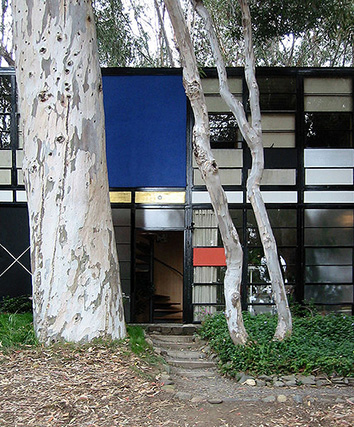
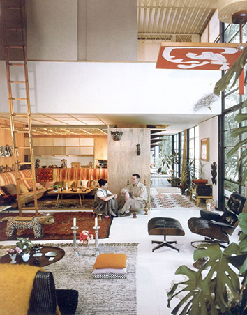

Charles and Ray Eames
“Design is a plan for arranging elements in such a way as best to accomplish a particular purpose.”
— Charles Eames
The Eames House

The Eames House, Case Study House #8, was one of roughly two dozen homes built as part of The Case Study House Program. Begun in the mid-1940s and continuing through the early 1960s, the program was spearheaded by John Entenza, the publisher of Arts and Architecture magazine.
In a challenge to the architectural community, the magazine announced that it would be the client for a series of homes designed to express man’s life in the modern world. These homes were to be built and furnished using materials and techniques derived from the experiences of the Second World War. Each home would be for a real or hypothetical client taking into consideration their particular housing needs.
Charles and Ray proposed that the home they designed would be for a married couple working in design and graphic arts, whose children were no longer living at home. They wanted a home that would make no demands for itself, and would serve as a background for, as Charles would say, “life in work” and with nature as a “shock absorber.”
Design and History

Unusually for such an avant-garde design, the Eames publicized the house as a thoroughly lived-in, usable, and well-loved home. While many icons of the modern movement are depicted as stark, barren spaces devoid of human use, photographs and motion pictures taken at the Eames house reveal a richly decorated, almost cluttered space full of thousands of books, art objects, artifacts, and charming knick-knacks as well as dozens of projects in various states of completion. The Eames' gracious live-work lifestyle continues to be an influential model.
The idea of a Case Study house was to hypothesize a modern household, elaborate its functional requirements, have an esteemed architect develop a design that met those requirements using modern materials and construction processes, and then to actually build the home. The houses were documented before, during and after construction for publication in Arts and Architecture. The Eames’ proposal for the Case Study House No. 8 reflected their own household and their own needs; a young married couple wanting a place to live, work and entertain in one undemanding setting in harmony with the site.
A 1.4-acre site near the coast in Pacific Palisades, on a wooded bluff that was once part of Will Rogers’ large estate, was selected. The design was first sketched out by Charles Eames with fellow architect Eero Saarinen in 1945 as a raised steel and glass box projecting out of the slope and spanning the entrance drive before cantilevering dramatically over the front yard. The structure was to be constructed entirely from "off-the-shelf" parts available from steel fabricators catalogs. Immediately after the war, though, these parts were in very short supply. By the time the materials arrived three years later, much pre-construction time had been spent picnicking at and exploring the lot where the house would stand. After a period of intense collaboration between Charles and Ray, the scheme was radically changed to sit more quietly in the land and avoid impinging upon the pleasant meadow that fronted the house.
The new design tucked the house sidelong into the slope, with an 8 foot (2.4 m) tall by 200 foot (60 m) long concrete retaining wall on the uphill side. A mezzanine level was added, making use of a prefabricated spiral stair that was to have been the lower entrance. The upper level holds the bedrooms and overlooks the double-height living room. A courtyard was also introduced, separating the residence from the studio space. This revised scheme required only one additional beam. The 17 foot (5.1 m) tall facade is broken down into a rigidly geometric, almost Mondrianesque composition of brightly colored panels between thin steel columns and braces, painted black. The entry door is marked with a gold-leaf panel above. An existing row of eucalyptus trees was preserved along the exposed wall of the house, providing some shading and a visual contrast with the house's bold facade. As for the interior design, the Eameses’ collection includes, among others, Isamu Noguchi floor lamps, Japanese kokeshi dolls, Chinese lacquered pillows, a Native American basket full of woven grass stems.
Of the twenty-five Case Study Houses built, the Eames house is considered the most successful both as an architectural statement and as a comfortable, functional living space. The brash sleekness of the design made it a favorite backdrop for fashion shoots in the 1950s and 1960s. Perhaps the proof of its success in fulfilling its program is the fact that it remained at the center of the Eames’ life and work from the time they moved in (Christmas Eve, 1949) until their deaths.
Conservation
The Eames House is operated by a foundation established in 2004 and run in part by the grandchildren of Charles and Ray Eames who maintain the house as an occasional residence. They have overseen the conservation of the structure and have preserved Charles and Ray's collections and decor. After the Eameses died, the house was left largely untouched. The studio is today used for the continuing work of the Eames Office. On September 20, 2006, the Eames House was designated a National Historic Landmark (and administratively listed on the National Register of Historic Places the same day). In 2011, the contents of the living room were reassembled at the Los Angeles County Museum of Art as a centerpiece of the exhibition “California Design, 1930-1965: Living in a Modern Way”. That same year, the Eames Foundation hired Los Angeles architectural firm Escher GuneWardena to develop a plan for the house, one that would restore and preserve the house as it was in 1988. In 2012, the Getty Conservation Institute pledged about $250,000 to preservation-related research work at the Eames House. In 2013, the Eames Foundation teamed up with the digital marketing agency Nebo to produce limited-edition prints for auction with a goal of raising $150,000; every donation will be matched by an Authenticity Fund created by modern furniture manufacturers Herman Miller and Vitra.
The house was included in a list of all time top 10 houses in Los Angeles in a Los Angeles Times survey of experts in December 2008.